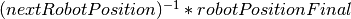
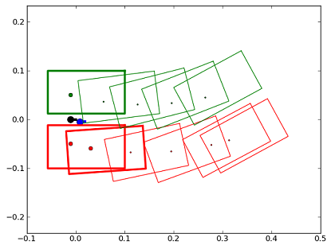
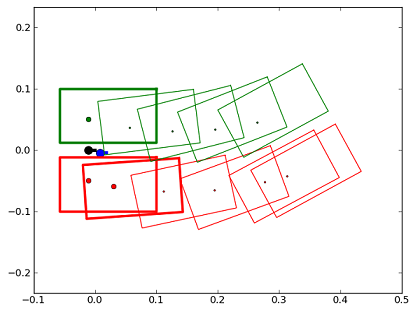
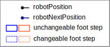
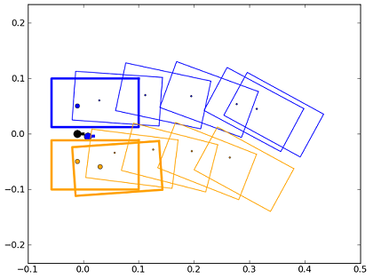

Locomotion control Tutorial: The Robot Position¶
NAOqi Motion - Overview | API | robot position Tutorial
Introduction¶
This tutorial explains how to use the robotPosition and getFootSteps API. Both these API will help you to have a better control on the walk algorithm.
Note
The tutorial is written in Python.
Download¶
You can download the robot position example here: motion_robotPosition.py
If the matplotlib module is found, it will be used for plotting data: http://matplotlib.sourceforge.net/.
For python-related troubleshooting, see: Python SDK Install Guide.
Code review¶
In this section we describe each important piece of code of the example.
NAOqi tools¶
- First, we import some external modules:
- config: custom module with helper functions
- motion: constant definitions such as SPACE.
- math: the standard python mathematic library useful for cos, sinus ...
- almath: an optimized mathematic toolbox for robotics. For further details, see: libalmath API reference.
- pylab: matplotlib useful for plotting data (http://matplotlib.sourceforge.net/).
# -*- encoding: UTF-8 -*-
import sys
import time
import math
import almath
from naoqi import ALProxy
def StiffnessOn(proxy):
# We use the "Body" name to signify the collection of all joints
pNames = "Body"
pStiffnessLists = 1.0
pTimeLists = 1.0
proxy.stiffnessInterpolation(pNames, pStiffnessLists, pTimeLists)
try:
import pylab as pyl
HAS_PYLAB = True
except ImportError:
print "Matplotlib not found. this example will not plot data"
HAS_PYLAB = False
def main(robotIP):
""" robot Position: Small example to know how to deal
with robotPosition and getFootSteps
"""
# Init proxies.
try:
motionProxy = ALProxy("ALMotion", robotIP, 9559)
except Exception, e:
print "Could not create proxy to ALMotion"
print "Error was: ", e
try:
postureProxy = ALProxy("ALRobotPosture", robotIP, 9559)
except Exception, e:
print "Could not create proxy to ALRobotPosture"
print "Error was: ", e
# Set NAO in stiffness On
StiffnessOn(motionProxy)
postureProxy.goToPosture("StandInit", 0.5)
# Initialize the move
motionProxy.moveInit()
# end init, begin experiment
# First call of move API
# with post prefix to not be bloquing here.
motionProxy.post.moveTo(0.3, 0.0, 0.5)
# wait that the move process start running
time.sleep(0.1)
# get robotPosition and nextRobotPosition
useSensors = False
robotPosition = almath.Pose2D(motionProxy.getRobotPosition(useSensors))
nextRobotPosition = almath.Pose2D(motionProxy.getNextRobotPosition())
# get the first foot steps vector
# (footPosition, unChangeable and changeable steps)
footSteps1 = motionProxy.getFootSteps()
# Second call of move API
motionProxy.post.moveTo(0.3, 0.0, -0.5)
# get the second foot steps vector
footSteps2 = motionProxy.getFootSteps()
# end experiment, begin compute
# here we wait until the move process is over
motionProxy.waitUntilMoveIsFinished()
# then we get the final robot position
robotPositionFinal = almath.Pose2D(motionProxy.getRobotPosition(False))
# compute robot Move with the second call of move API
# so between nextRobotPosition and robotPositionFinal
robotMove = almath.pose2DInverse(nextRobotPosition)*robotPositionFinal
print "Robot Move :", robotMove
# end compute, begin plot
if (HAS_PYLAB):
#################
# Plot the data #
#################
pyl.figure()
printRobotPosition(robotPosition, 'black')
printRobotPosition(nextRobotPosition, 'blue')
printFootSteps(footSteps1, 'green', 'red')
pyl.figure()
printRobotPosition(robotPosition, 'black')
printRobotPosition(nextRobotPosition, 'blue')
printFootSteps(footSteps2, 'blue', 'orange')
pyl.show()
# end plot
def printRobotPosition(pos, color):
""" Function for plotting a robot position
:param pos: an almath Pose2D
:param color: the color of the robot
"""
robotWidth = 0.01
pyl.plot(pos.x, pos.y, color=color, marker='o', markersize=10)
pyl.plot([pos.x, pos.x + robotWidth*math.cos(pos.theta)],
[pos.y, pos.y + robotWidth*math.sin(pos.theta)],
color=color,
linewidth = 4)
def printFootSteps(footSteps, colorLeft, colorRight):
""" Function for plotting the result of a getFootSteps
:param footSteps: the result of a getFootSteps API call
:param colorLeft: the color for left foot steps
:param colorRight: the color for right foot steps
"""
if ( len(footSteps[0]) == 2) :
posLeft = footSteps[0][0]
posRight = footSteps[0][1]
if(posLeft != posRight):
leftPose2D = almath.Pose2D(posLeft[0], posLeft[1], posLeft[2])
printLeftFootStep(leftPose2D, colorLeft, 3)
rightPose2D = almath.Pose2D(posRight[0], posRight[1], posRight[2])
printRightFootStep(rightPose2D, colorRight, 3)
if ( len(footSteps[1]) >= 1 ):
for i in range(len(footSteps[1])):
name = footSteps[1][i][0]
pos = footSteps[1][i][2]
tmpPose2D = almath.Pose2D(pos[0], pos[1], pos[2])
if(name == 'LLeg'):
leftPose2D = rightPose2D * tmpPose2D
printLeftFootStep(leftPose2D, colorLeft, 3)
else:
rightPose2D = leftPose2D * tmpPose2D
printRightFootStep(rightPose2D, colorRight, 3)
if ( len(footSteps[2]) >= 1 ):
for i in range(len(footSteps[2])):
name = footSteps[2][i][0]
pos = footSteps[2][i][2]
tmpPose2D = almath.Pose2D(pos[0], pos[1], pos[2])
if(name == 'LLeg'):
leftPose2D = rightPose2D * tmpPose2D
printLeftFootStep(leftPose2D, colorLeft, 1)
else:
rightPose2D = leftPose2D * tmpPose2D
printRightFootStep(rightPose2D, colorRight, 1)
pyl.axis('equal')
def printLeftFootStep(footPose, color, size):
""" Function for plotting a LEFT foot step
:param footPose: an almath Pose2D
:param color: the color for the foot step
:param size: the size of the line
"""
lFootBoxFL = footPose * almath.Pose2D( 0.110, 0.050, 0.0)
lFootBoxFR = footPose * almath.Pose2D( 0.110, -0.038, 0.0)
lFootBoxRR = footPose * almath.Pose2D(-0.047, -0.038, 0.0)
lFootBoxRL = footPose * almath.Pose2D(-0.047, 0.050, 0.0)
pyl.plot(footPose.x, footPose.y, color=color, marker='o', markersize=size*2)
pyl.plot( [lFootBoxFL.x, lFootBoxFR.x, lFootBoxRR.x, lFootBoxRL.x, lFootBoxFL.x],
[lFootBoxFL.y, lFootBoxFR.y, lFootBoxRR.y, lFootBoxRL.y, lFootBoxFL.y],
color = color,
linewidth = size)
def printRightFootStep(footPose, color, size):
""" Function for plotting a RIGHT foot step
:param footPose: an almath Pose2D
:param color: the color for the foot step
:param size: the size of the line
"""
rFootBoxFL = footPose * almath.Pose2D( 0.110, 0.038, 0.0)
rFootBoxFR = footPose * almath.Pose2D( 0.110, -0.050, 0.0)
rFootBoxRR = footPose * almath.Pose2D(-0.047, -0.050, 0.0)
rFootBoxRL = footPose * almath.Pose2D(-0.047, 0.038, 0.0)
pyl.plot(footPose.x, footPose.y, color=color, marker='o', markersize=size*2)
pyl.plot( [rFootBoxFL.x, rFootBoxFR.x, rFootBoxRR.x, rFootBoxRL.x, rFootBoxFL.x],
[rFootBoxFL.y, rFootBoxFR.y, rFootBoxRR.y, rFootBoxRL.y, rFootBoxFL.y],
color = color,
linewidth = size)
if __name__ == "__main__":
robotIp = "127.0.0.1"
if len(sys.argv) <= 1:
print "Usage python motion_robotPosition.py robotIP (optional default: 127.0.0.1)"
else:
robotIp = sys.argv[1]
main(robotIp)
NAO initialization¶
Then, the proxy to ALMotion module is created. This proxy is needed to call the ALMotion API. Set stiffness into the joint and execute a PoseInit.
def main(robotIP):
""" robot Position: Small example to know how to deal
with robotPosition and getFootSteps
"""
# Init proxies.
try:
motionProxy = ALProxy("ALMotion", robotIP, 9559)
except Exception, e:
print "Could not create proxy to ALMotion"
print "Error was: ", e
try:
postureProxy = ALProxy("ALRobotPosture", robotIP, 9559)
except Exception, e:
print "Could not create proxy to ALRobotPosture"
print "Error was: ", e
# Set NAO in stiffness On
StiffnessOn(motionProxy)
postureProxy.goToPosture("StandInit", 0.5)
# Initialize the move
motionProxy.moveInit()
The experiment¶
We send a first walk command and, few seconds later, a second one.
We can see the difference between unchangeable and changeable foot steps. The second walk command is executed after the unchangeable foot generated by the first walk command.
# First call of move API
# with post prefix to not be bloquing here.
motionProxy.post.moveTo(0.3, 0.0, 0.5)
# wait that the move process start running
time.sleep(0.1)
# get robotPosition and nextRobotPosition
useSensors = False
robotPosition = almath.Pose2D(motionProxy.getRobotPosition(useSensors))
nextRobotPosition = almath.Pose2D(motionProxy.getNextRobotPosition())
# get the first foot steps vector
# (footPosition, unChangeable and changeable steps)
footSteps1 = motionProxy.getFootSteps()
# Second call of move API
motionProxy.post.moveTo(0.3, 0.0, -0.5)
# get the second foot steps vector
footSteps2 = motionProxy.getFootSteps()
Compute robot move¶
Here, using walk API, we compute the move made by the robot. The goal is to find the value of the second walk command.
The robot begins the second walk command after the first command unchangeable foot step. In this case the robot position is the result of nextRobotPosition.
Then, we wait the end of the walk process (waitUntilMoveIsFinished) and we get the final robot position.
The distance is equivalent to:
.
And the result should be [0.3, 0.0, -0.5]
# here we wait until the move process is over
motionProxy.waitUntilMoveIsFinished()
# then we get the final robot position
robotPositionFinal = almath.Pose2D(motionProxy.getRobotPosition(False))
# compute robot Move with the second call of move API
# so between nextRobotPosition and robotPositionFinal
robotMove = almath.pose2DInverse(nextRobotPosition)*robotPositionFinal
print "Robot Move :", robotMove
Print Result¶
We use matplotlib function to print the foot step result of the experience.
Functions printRobotPosition and printFootSteps are defined in the motion_robotPosition.py file.
if (HAS_PYLAB):
#################
# Plot the data #
#################
pyl.figure()
printRobotPosition(robotPosition, 'black')
printRobotPosition(nextRobotPosition, 'blue')
printFootSteps(footSteps1, 'green', 'red')
pyl.figure()
printRobotPosition(robotPosition, 'black')
printRobotPosition(nextRobotPosition, 'blue')
printFootSteps(footSteps2, 'blue', 'orange')
pyl.show()
This first figure represents the result of the first walk command:
 

The second one shows the effect of the second walk command. We see that unChangeable footStep of the first command will be executed before the second command:
 